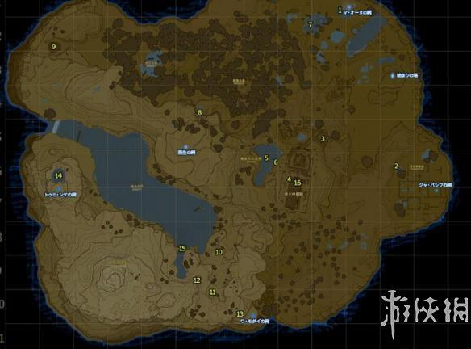
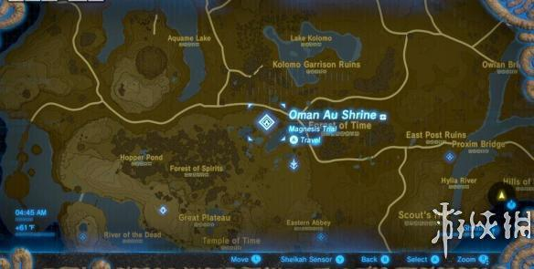
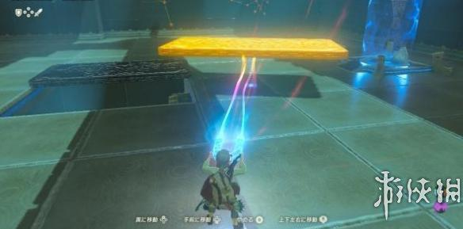
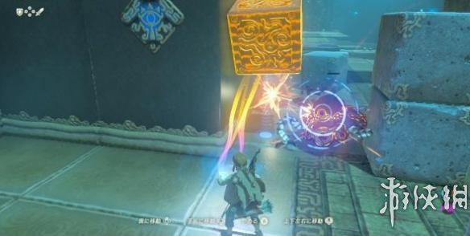
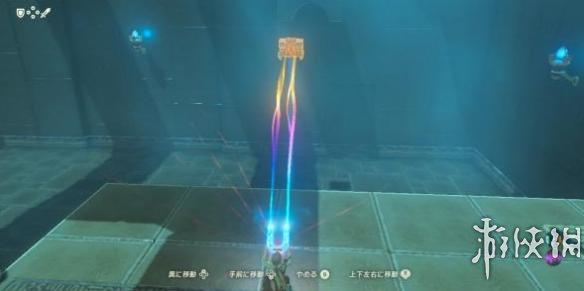

在塞尔达传说荒野之息里有许多试炼祠，今天小编就为大家带来试炼之祠Great Plateau区域攻略，就是始まりの台地/Great Plateau篇，也就是游戏开始时我们所在的区域。感兴趣的朋友快来看看吧！
试炼之祠Great Plateau区域攻略

这个地区有一座塔，四个试炼之祠(Shrine)，位置已在上图标出。
マ・オーヌ/ Oman Au Shrine

磁力主题的挑战。按方向键↑可调出磁力符文，右摇杆切换。迷宫里的铁板、铁块、宝箱都可以用磁铁符文吸引，然后用右摇杆随意调整位置。宝箱内有旅人之弓。


